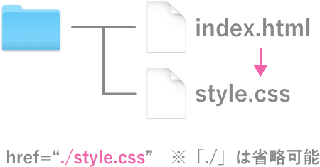
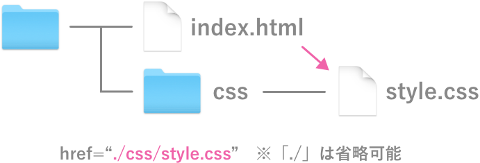
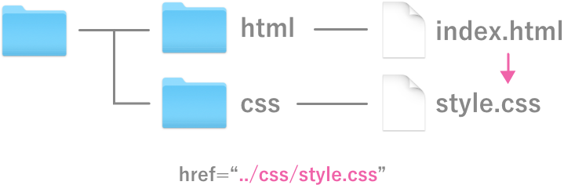
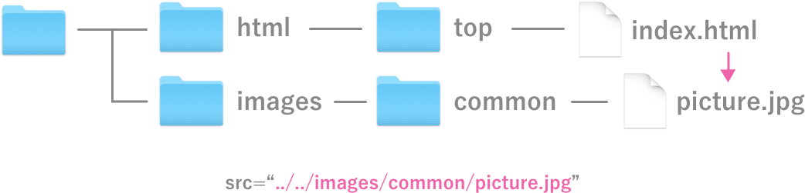

2. CSSとは？
2-1. Cascading Style Sheets
- 【Cascading（カスケーディング）】
- cascade（カスケード）の現在分詞。（今まさに〜している、〜している状態にある）
cascade（カスケード）とは、何段も連なった小さな滝のこと。転じて、同じものがいくつも数珠つなぎに連結された構造や、連鎖的あるいは段階的に物事が生じる様子を表す。
CSSで使われるcascade（カスケード）の場合、ある要素の見た目を決定する際に、上流で適用された見た目を引き継ぎ、競合する場合は上書きしながら、段階的に設定していくことを意味する。
- 【Style Sheet（スタイルシート）】
- スタイルシート (style sheet) とは、構造化文書（例えばHTML）などにおける表示形式を制御する仕組み。見た目と構造を分離するという目的で提唱された。
- ※CSSの場合、一つの文書に複数のスタイルシートを使用することが多いので「sheets」と複数形になっていると高木は予想している。
まとめると、
CSSとは「構造化文書の構造とは分離した形で、見た目を段階的に設定していく仕組み」
すなわち、構造を設定する言語が「HTML」、見た目を設定する言語が「CSS」
2-2. CSSの歴史
- 1994年、WWW生誕の地であるCERNに勤務するホーコン・ウィウム・リーにより提唱される
- 1996年12月、Cascading Style Sheets, level 1 (CSS1), 勧告
- 1998年5月、Cascading Style Sheets, level 2 (CSS2), 勧告
- 2011年6月、Cascading Style Sheets, level 2 revision 1 (CSS2.1), 勧告
- 現在、「CSS3」を策定中
- 【W3C勧告とは？】
- W3Cが作成する技術文書にはその成熟までにいくつかの段階があり、技術に関するテストやレビュー、仕様変更を重ね、長い時間をかけて文書の内容を改良している。その流れの中での最後の段階で「仕様が完全に決まり、規格文書が公式に発表される状態」のことを勧告という。
2-3. なぜ「構造」と「見た目」を分ける？
構造化文書の利点は、「内容を様々な状況で再利用でき、様々な方法で表示可能」であること。同じ構造化文書に異なるスタイルシートを付与することで、異なる表示が得られる。
- 昔のブラウザ（論文のみを表示するもの）から、最新のブラウザ（ゲーム機や冷蔵庫、時計に搭載されたもの）まで、ページの情報を表示することができる。
- 目が不自由な方も、音声ブラウザでページの内容を構造に沿って読み上げることで、情報を取得することができる
- Google検索は「HTML」の構造と内容だけを読み込むことで、検索順位を素早く決めることができる
- FacebookやTwitterでページをシェアした際に、タイムラインに合った形で情報を表示することができる
つまり、CSSを完璧に理解してデザインどおりに見た目を再現できても、構造がしっかりと設定されていなければ、いつかどこかで情報を伝えることができなくなる可能性がある。（構造化大事！）
4. CSSの基本構造
<!doctype html>
<html>
<head>
<meta charset="UTF-8">
<title>CSSとは？</title>
<!-- 追加 -->
<style>
p { color : red; }
</style>
</head>
<body>
<p>本文です。</p>
</body>
</html>
- "{" から "}" までの部分を「宣言ブロック」という。
- "p" を「セレクタ（選択子）」といい、スタイルが適用される対象をしめす。
- "color : red" 部分を「宣言」という。
- 宣言の内、":" より前（上例では "color"）を「プロパティ（特性）」という。
- 宣言の内、":" より後（上例では "red"）を「値」という。
4-2. CSSの文法
- プロパティ、":"、値の前後には空白文字（スペース、タブ、改行など）を自由に入れることができる。
- 大文字小文字は区別されないが、基本的にはすべて小文字で。
- ";"で区切ることにより、複数の宣言を書くことができる。
<style>
p {
color : red;
background-color : green;
}
</style>
※半角スペースや改行、タブを入れることで自分なりに見やすくすること。
4-3. CSSの記述場所
CSSの記述場所は以下の3種類。
- 【style属性】
-
<!doctype html>
<html>
<head>
<meta charset="UTF-8">
<title>CSSとは？</title>
</head>
<body>
<p style="color:red; background-color:green;">本文です。</p>
</body>
</html>
htmlとcssが同一文書に混在し「構造化文書の構造とは分離した形」というCSSの概念に反しているので、基本的には使わない。（JavaScriptで使うことになる）
- 【style要素】
-
<!doctype html>
<html>
<head>
<meta charset="UTF-8">
<title>CSSとは？</title>
<style>
p {
color : red;
background-color : green;
}
</style>
</head>
<body>
<p>本文です。</p>
</body>
</html>
これもhtmlとcssが混在してしまうため、実務では基本的には使わない。（授業では簡略化のため使用する場合がある）
そして残り一つは、「外部ファイルを読み込む」方法。
6. 絶対パスと相対パス
「href属性」や「src属性」などサイトやファイルを指定する際に、その場所までの道筋を記述したものを「パス」といい、たどり着くまでのアプローチ方法として「絶対パス」と「相対パス」の2種類がある。
※「画像が表示されない」や「CSSが反映されない」原因のほとんどが「パスの指定間違い」であるため、しっかり理解すること！
6-1. 絶対パス
http://から始まるアドレス（URL)を使ってファイルの場所を指定すること。どこから見てもアクセスできる。
<!doctype html>
<html>
<head>
<meta charset="UTF-8">
<title>CSSとは？</title>
<link rel="stylesheet" href="https://trident.takagino.net/doc2020/assets/css/common.css">
</head>
<body>
<p>本文です。</p>
<a href="https://computer.trident.ac.jp/">トライデントコンピュータ専門学校</a>
<img src="https://computer.trident.ac.jp/news/topics/images/10754da50c9587e6cbb770ebf2b170b5e0af3f14.JPG">
</body>
</html>
しかし、インターネット上にファイルがアップされていないとURLは存在しない、また、後で変更される可能性も高いため、自分で用意する画像やファイルは「絶対パス」で指定しないほうが無難。
6-2. 相対パス
基準となるファイルから見て、読み込ませたいファイルの場所を指定すること。
- 【パスの記述方法】
-
- 同じ階層内にあるファイルを参照する場合は、「./ファイル名」（「./」は省略可能）

- 同じ階層内にあるフォルダの中のファイルを参照する場合は、「./フォルダ名/ファイル名」（「./」は省略可能）

- 一つ上の階層内にあるフォルダ・ファイルを参照する場合は、「../フォルダ名/ファイル名」

- 二つ上の階層内にあるフォルダ・ファイルを参照する場合は、「../../フォルダ名/ファイル名」

★フォルダ名「css」で新規フォルダを作り、style.cssを移動させてみよう。
※エディターでファイルを開いたまま「移動・削除・名前の変更」等をすると、意図しない動作をすることがあるので、一度閉じて再度開き直すと良い。